資料更新・公開 / 実際の Chrome 操作
隔離 Admin: http://localhost:5176/admin
実際の Google Chrome を CUA で操作。SDK は正式配布物を使用。AI 文言は TEST provider で、実 AI・音声・マイクの受け入れではありません。
画面の人工修正は TEST 専用です。通常 DB、実資料の公開、音声設定は変更していません。
金利条件：追加・修正・削除後に保存し、Chrome を刷新して復元
元の補足・数値条件とは別に、2行のTEST条件を順番どおり保持。
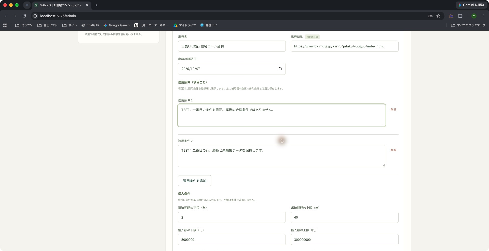
2026-10-08T01:18:28.647Z / 01-conditions-restored.png
保存・社員確認・公開は別操作
確認済みの下書き。SDK raw / normalized は API ハッシュ検査で不変。公開版はまだ作成していません。
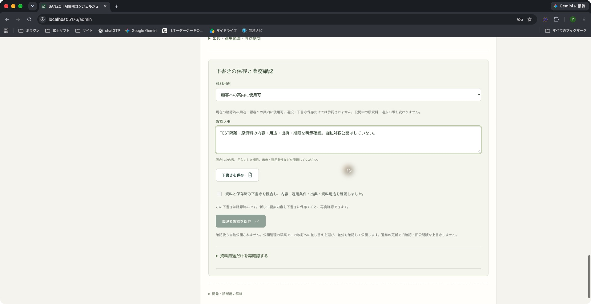
2026-10-08T01:19:14.218Z / 02-confirmation-flow.png
更新前の接客は公開版 v1
物件選択後に76,900,000円を表示。一般相談と物件資料は実際のToolsを使用、回答文言はTESTです。
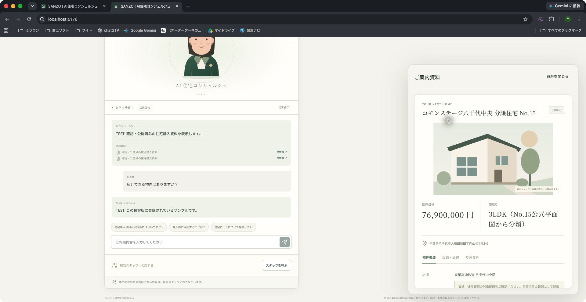
2026-10-08T01:21:48.703Z / 03-customer-v1.png
登録内容の修正を確認しても、まだ公開版 v1
77,900,000円はTEST人工修正。新しい業務確認を作成した時点では公開していません。
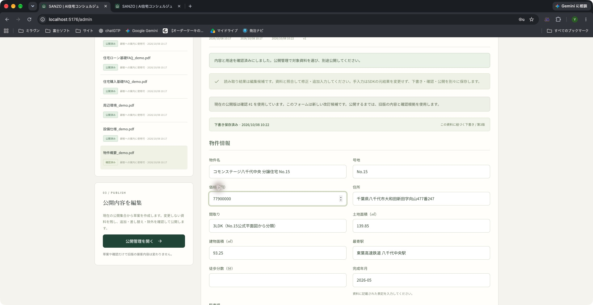
2026-10-08T01:22:15.546Z / 04-confirmed-update-v1-retained.png
新しい確認の後も、旧 v1 接客が76,900,000円を回答
Backend再起動後に実際のToolsからv1価格を取得。字幕と資料カードが旧公開版の金額を維持。
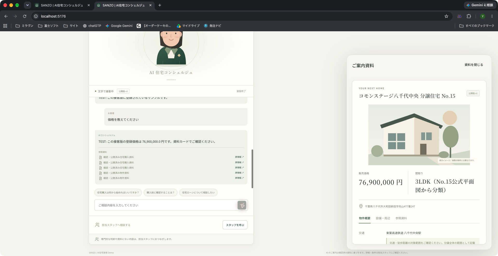
2026-10-08T01:22:33.231Z / 05-old-session-after-confirm.png
新しいファイルに差し替える：旧資料と明示的に関連付け
別のTEST PDFを新資料として登録。解析・確認・公開はこれからで、v1は保持。
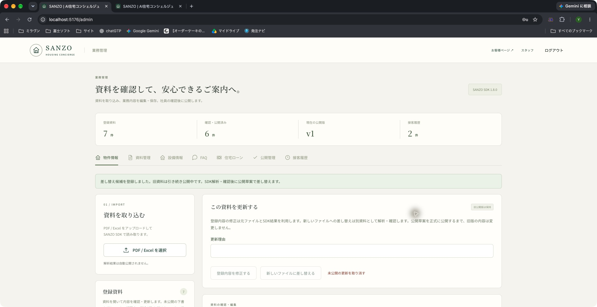
2026-10-08T01:24:17.821Z / 06-new-file-update-entry.png
実 SDK 解析した差し替え候補を照合・確認
TEST PDFは独立資料・独立確認として保存。元ファイルとv1は維持。
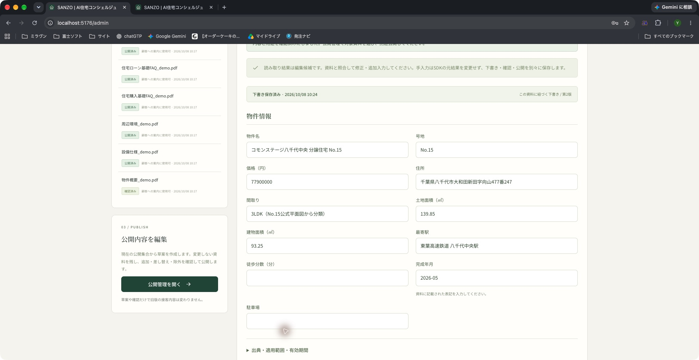
2026-10-08T01:24:48.781Z / 07-sdk-replacement-reviewed.png
v1 → v2：物件概要1件の差し替え、他5件は維持
価格76,900,000円→77,900,000円（TEST）。追加0、差し替え1、維持5、除外0。最終公開前の差分。
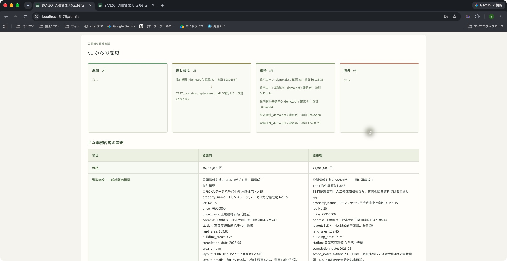
2026-10-08T01:25:52.751Z / 08-v2-publication-diff.png
Chromeで差分を確認して v2 を明示公開
新しい接客から反映。有効な既存v1接客は開始時の版を維持。
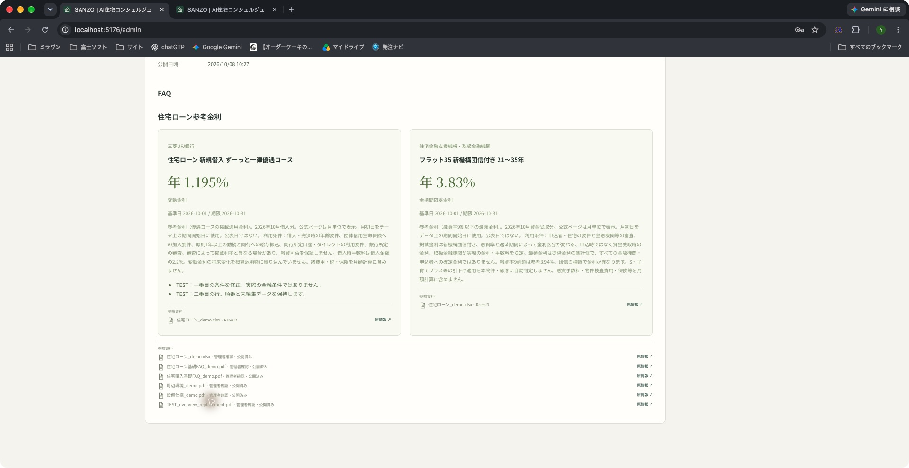
2026-10-08T01:27:21.421Z / 09-v2-published.png
v2公開後も開始済みv1接客は旧価格を維持
再度Tools問い合わせを実行。v1 / 76,900,000円を維持し、新旧資料を混ぜません。
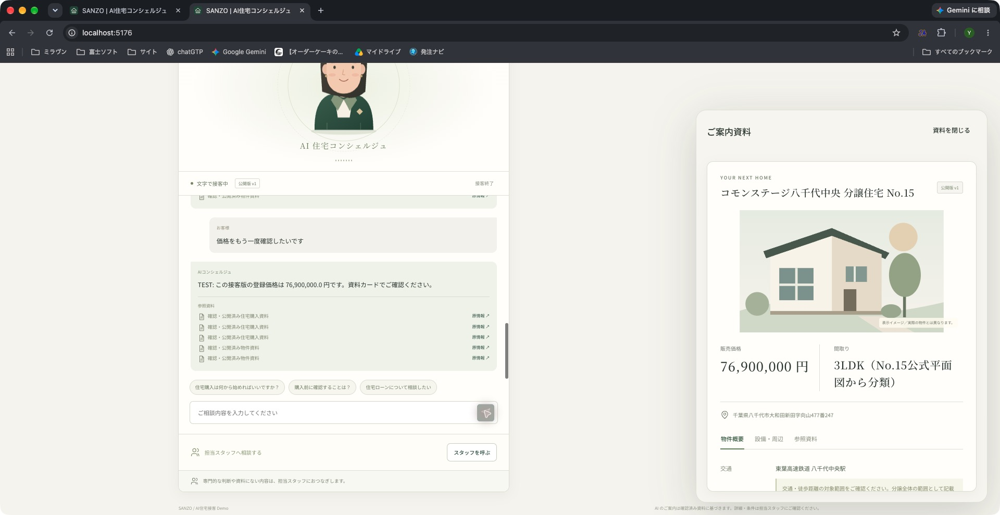
2026-10-08T01:27:29.031Z / 10-old-v1-after-v2.png
新しい接客は v2 / TEST77,900,000円
同じ時点で旧タブはv1、新しいタブはv2。選択後の物件カードに新版価格を表示。
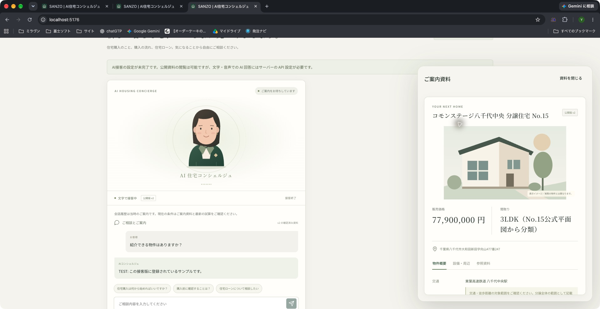
2026-10-08T01:27:51.068Z / 11-new-customer-v2.png
v2価格と登録金利で Backend が試算
頭金500万円・35年・明示選択商品。金利、条件、期限、必要免責を保留。AIによる金額計算はしていません。
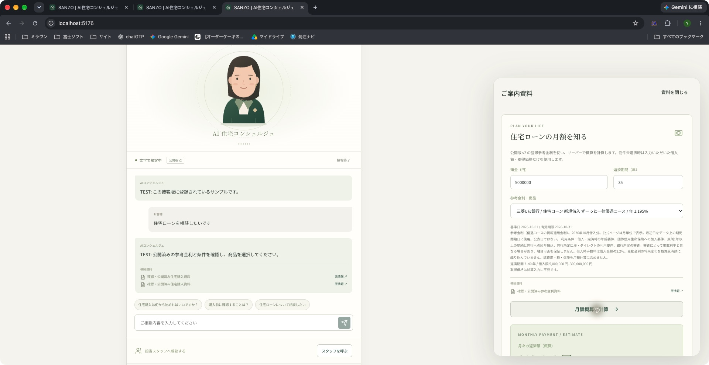
2026-10-08T01:28:14.238Z / 12-v2-backend-mortgage.png
Staff受付とCustomer状態の同期
同じv2接客の呼出を実Staff画面で受付。
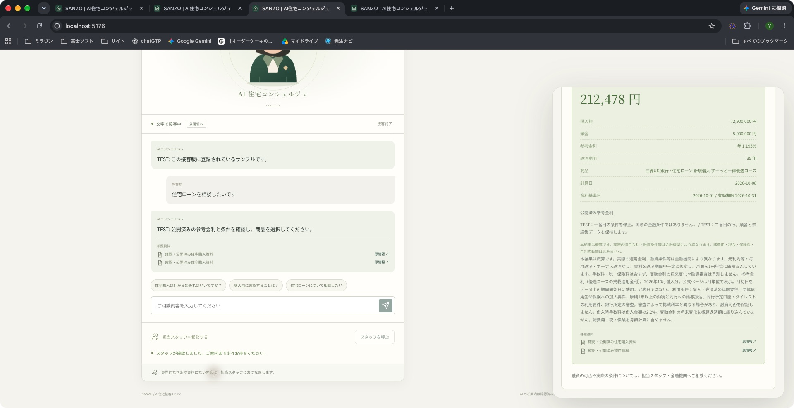
2026-10-08T01:28:49.089Z / 13-staff-accepted-customer.png
版本履歴：v1とv2、共有admin、説明、実際の確認改訂
原版は削除・上書きせず保持。実在しない社員個人アカウントは記録しません。
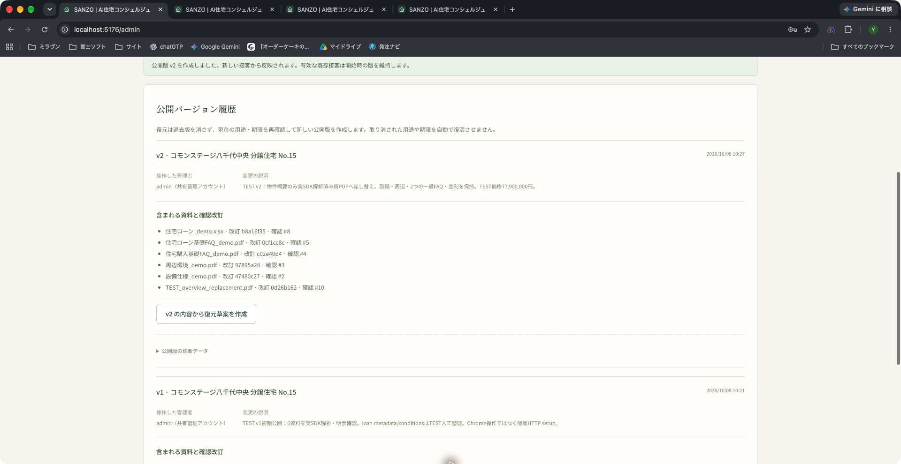
2026-10-08T01:29:43.179Z / 14-version-history.png
v1復元の差分を再確認
基準v2、復元元v1。価格77,900,000円→76,900,000円を明示。追加1・除外1・維持5、別ファイルを置換と偽らない。
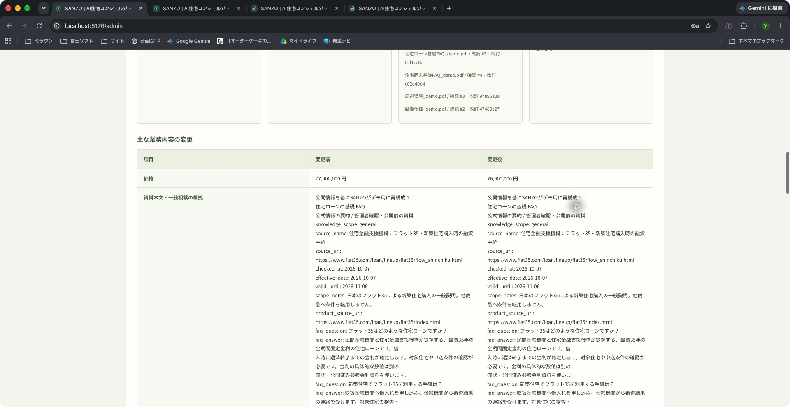
2026-10-08T01:35:25.795Z / 15-restore-preview.png
復元はv3を新規作成
実Chromeで差分確認後に明示公開。現在の公開版がv3となり、v1/v2は履歴を保持する。
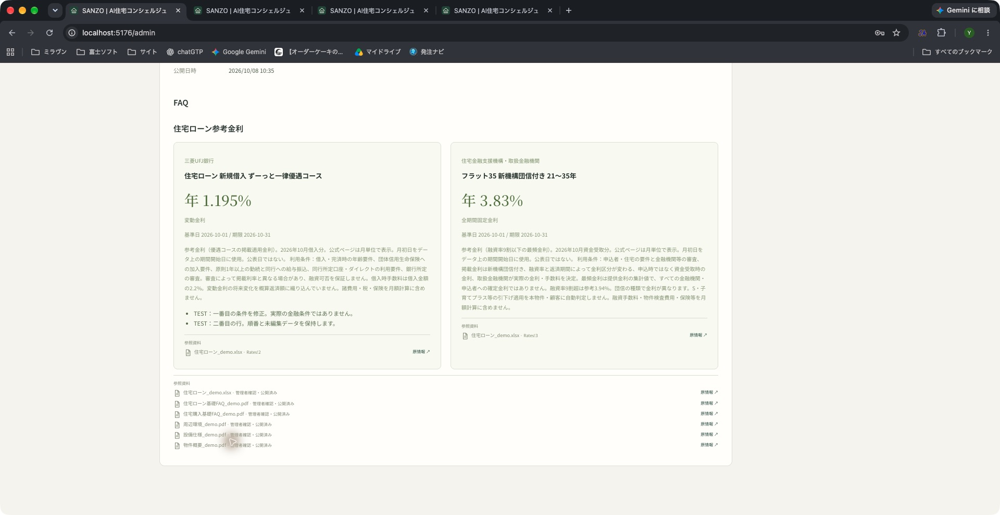
2026-10-08T01:35:38.947Z / 16-restored-v3.png
全履歴を保持した復元後
v3の実操作身份はadmin共有管理者。確認改訂6件を保持し、v2/v1の履歴は削除せず残る。
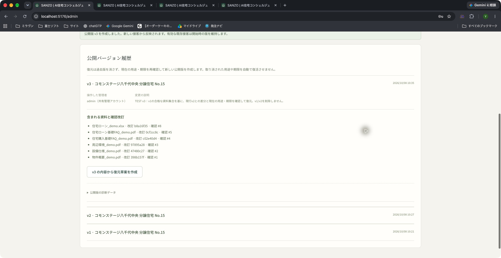
2026-10-08T01:35:49.955Z / 17-history-v1-v2-v3.png